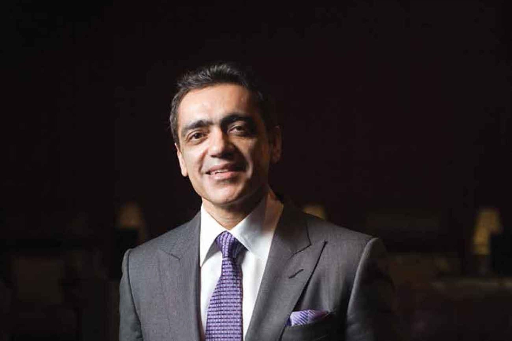

5 Fit CEOs around the World
“I don’t have time” is one of the most common excuses for not working out. It is understandable in today’s fast paced life to skip exercising. But the importance of physical exercise cannot be stressed upon more. Apart from the obvious benefits of physical activity, exercise improves your general energy levels, improves brain function, helps you sleep better and also helps prevent mental illnesses.
Here are a few business tycoons with very busy and stressful lives who still manage to make time for their physical health.
Jeff Bezos
This 56 year old CEO of Amazon is a gym fanatic and follows a strict diet and workout schedule. This includes strength training which is an exercise that focuses on anaerobic endurance, size of skeletal muscles and the use of resistance which helps in building muscles. His workouts also include heavyweights which can give him heavy biceps with the visibility of veins.
Bezos does not compromise on a healthy and full breakfast which often consists of green garlic yoghurt, poached eggs, bacon and potatoes. He also avoids early morning meetings to make sure he spends quality time with his kids over breakfast.
Richard Branson

“The key for everybody is sticking with it — we all know that feeling of the high we get when we do an hour of exercise — I never want to stop getting that wonderful endorphin rush,” Branson wrote. “But it’s easy to slip into a ‘not today, I’ll do it tomorrow,’ mindset. You have to keep going even when you don’t feel like it.”
Sixty-seven year old Richard Branson, the billionaire founder of Virgin Groups has a hard hitting workout routine. His systematic fitness program includes weights and band stretches that helps to keep his weight down but increases his muscle and bone mass. He runs, plays a game of singles tennis every morning and evening, bikes and even kitesurfs. He says he feels great and confident when he looks after his body. His participation in the 2010 London Marathon dressed as a butterfly was popularly acknowledged.
Nadia Chauhan

Nadia Chauhan is the CEO of Parle Agro. Chauhan loves sports and loved horse riding when she was younger. She believes that fitness clears your minds and allows you to think better. Her regular workout includes 30 minutes of cardio and 30 minutes of resistance training. She often alternates her workouts with a round of swimming or a game of tennis or squash. She loves variety and has tried Zumba, Bollywood dancing, martial arts etc. With a huge business to take care of and being a single mother, she still makes sure she workout at least 4 days a week.
Although she doesn’t have a strict diet, she believes in having three good meals a day and avoids snacking. Her diet includes broccoli, eggplant, asparagus, zucchini and pumpkin.
Ajay Bijli
Being the grandson of ‘Bijli Pehalwan’ and the son of a cricket player, Ajay Bijli, CEO of PVR cinemas comes from an active family. He graduated in ‘basketball honours’. Such encouragement during his formative years has set the basis for his life. He now has an at-home gym routine which lets him exercise at his own pace. He works out 4-5 times a week and runs 30kms on the treadmill. Mr. Bijli has also participated in the Delhi half marathon 5 times. He believes that physical exercise gives him a positive attitude towards life.
Natarajan Chandrasekar
Chandrasekar or Chandra is fondly called the Marathon man of Tata. He is an avid runner and participates and sponsors marathons across the country. Unlike most marathon guides which includes taking rest breaks mid-week, he runs on all days of the week often covering 50kms a week. He believes that running helps you notice things you normally wouldn’t and that it has taught him that there are no short-cuts in life. His wife and son have also taken up running and they often run marathons together as a family. He also works out in his personal gym. He is a vegetarian who follows no strict diet.
These billionaires have managed to inspire us with not only their entrepreneurship and managerial skills but to also get us off our couches. Come join us in a journey of healthy living.